영사기능사 (2004-04-04 기출문제)
1과목: 전기일반
1. 오옴의 법칙을 옳게 나타낸 식은?
- 전압 = 전류 × 저항
- 전압 = 저항 ÷ 전류
- 전압 = 전류 ÷ 저항
- 전압 = 전류 x 전력
(정답률: 알수없음)

2. 다음 중 병렬저항 회로는?
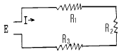
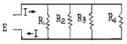
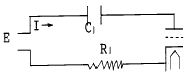
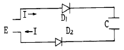
(정답률: 알수없음)
3. 고유저항의 설명중 옳지 못한 것은?
- 기본단위는 [Ω·m]이다.
- 절연물은 고유저항 값이 작다.
- 실용단위는 [Ω·mm2/m]이다.
- 면적 1[m2], 길이 1[m]인 물질의 저항을 말한다.
(정답률: 알수없음)
4. 1[eV](=전자볼트)는 몇 주울[J]인가?
- 1[J]
- 10-16[J]
- 1.3⑤x10-11[J]
- 1.602x10-19[J]
(정답률: 알수없음)
5. 2극 동기발전기가 1회전하였을 때의 전기각은 몇 [rad]인가?
- π/2 [rad]
- π[rad]
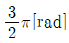
- 2π[rad]
(정답률: 알수없음)
6. 사인파 교류에서 회전자가 1초에 60회전할 때 각속도[rad/s]는?
- 60
- 60π
- 120
- 120π
(정답률: 알수없음)
7. 직류전동기의 회전속도 설명으로 옳은 것은?
- 공급전압과 역기전력의 차에 비례한다.
- 역기전력의 크기에 비례한다.
- 계자자속의 크기에 비례한다.
- 극수에 비례한다.
(정답률: 알수없음)
8. 실효값이 220[V]인 사인파 교류전압의 최대 값은?
- 220/√2 [V]
- 220[V]
- 220√2 [V]
- 220/π[V]
(정답률: 알수없음)
9. 전압 또는 전류를 측정할 때 전압계는 부하 또는 전원과 (㉠)로, 전류계는 (㉡)로 접속해야 한다. 이 때 ( )에 들어갈 적당한 단어는?
- ㉠ 병렬, ㉡ 직렬
- ㉠ 직렬, ㉡ 병렬
- ㉠ 병렬, ㉡ 병렬
- ㉠ 직렬, ㉡ 직렬
(정답률: 알수없음)
10. 3[Ω], 4[Ω], 5[Ω]의 저항 3개를 병렬로 연결했을 경우에 대한 설명으로 틀린 것은?
- 각 저항에 걸리는 전류는 모두 같다.
- 각 저항에 걸리는 전압은 모두 같다.
- 3개의 저항을 직렬로 연결했을 때의 합성저항보다 작다.
- 합성저항을 구하기 위한 식은3×4×5/3×4+4×5+5×3이다.
(정답률: 알수없음)
11. 전기저항의 설명으로 맞는 것은?
- 도체의 길이에 비례하고 단면적에 반비례한다.
- 도체의 길이에 반비례하고 단면적에 비례한다.
- 도체의 길이제곱에 비례하고 단면적에 반비례한다.
- 도체의 길이에 비례하고 단면적에도 비례한다.
(정답률: 알수없음)
12. 직류전동기 정격중 지정 조건하에서 연속 사용시, 규격에 정해진 온도상승 한도를 초과하지 않고 기타의 제한도 넘지 않는 정격을 무엇이라 하는가?
- 단시간 정격
- 반복정격
- 연속정격
- 등가정격
(정답률: 알수없음)
13. 다음 빛의 색 중 유리에서 속도가 가장 빠른 것은?
- 보라
- 파랑
- 빨강
- 노랑
(정답률: 알수없음)
14. 색의 3요소로 잘못된 것은?
- 색상
- 명도
- 채도
- 조도
(정답률: 알수없음)
15. 다음 중 광도의 단위는 어느 것인가?
- cd(칸델라)
- lx(룩스)
- ℓ m(루우멘)
- C(쿨롱)
(정답률: 알수없음)
2과목: 렌즈 및 광원
16. 입체영화는 빛의 어떤 현상을 이용한 것인가?
- 편광
- 간섭
- 회절
- 산란
(정답률: 알수없음)
17. 물의 굴절률은 4/3이다. 빛이 공기 중에서 물속으로 입사각 42° 로 입사하면 굴절각은 얼마인가? (단, sin 42°≒2/3)
- 0°
- 30°
- 45°
- 60°
(정답률: 알수없음)
18. 오목거울에서의 빛의 진로에 대한 설명으로 틀린 것은?
- 거울축에 나란하게 입사한 광선은 반사된 후 초점을 지난다.
- 초점 방향으로 입사한 광선은 반사된 후 거울축에 나란하게 나간다.
- 구심 방향으로 입사한 광선은 반사된 후 입사한 방향으로 되돌아 간다.
- 거울 중심으로 입사한 광선은 반사된 후 초점을 지난다.
(정답률: 알수없음)
19. 초점거리가 10㎝인 볼록렌즈의 앞 15㎝되는 곳에 물체를 놓았을 때 생기는 상의 종류와 배율은?
- 도립실상, 1/2배
- 정립허상, 1/2배
- 도립실상, 2배
- 정립허상, 2배
(정답률: 알수없음)
20. 명시거리가 15cm인 사람이 써야 하는 안경은? (단, 정상인의 명시거리를 25cm라 가정한다.)
- 초점거리가 37.5cm인 볼록렌즈
- 초점거리가 37.5cm인 오목렌즈
- 초점거리가 9.4cm인 볼록렌즈
- 초점거리가 9.4cm인 오목렌즈
(정답률: 알수없음)
21. 각각 프리즘에 그림과 같은 방향으로 광선을 입사시켰을 때 통과하는 빛의 경로로 옳은 것은?
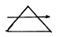
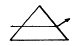
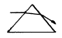
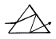
(정답률: 알수없음)
22. 광각에서 망원까지 정해진 범위에서 초점거리를 연속적으로 변화시켜 화상을 원하는 크기로 바꿀 수 있는 렌즈를 무슨 렌즈라 하는가?
- 어안렌즈
- 반사렌즈
- 줌 렌즈
- 마이크로렌즈
(정답률: 알수없음)
23. 다음 중 npn형 트랜지스터의 기호는?
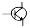
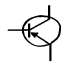
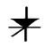
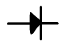
(정답률: 알수없음)
24. 다음 트랜지스터에서 부하에 흐르는 전류로서 유효하게 사용되는 것은?
- 직류분 + 교류분
- 직류분 - 교류분
- 직류분
- 교류분
(정답률: 알수없음)
25. 되먹임이 없을 때 증폭도가 100일 경우, 음되먹임률(β)이 0.⑤라면 되먹임이 있을 경우 실효 증폭도는?
- 약 10배
- 약 16.7배
- 약 50배
- 약 167배
(정답률: 알수없음)
26. 다음 소자중 정류에 사용되는 것은?
- 다이오드
- 사이리스터
- 서미스터
- 단접합 트랜지스터
(정답률: 알수없음)
27. 사람의 귀에 대한 설명으로 틀린 것은?
- 눈에 잔상이 있듯이 귀에도 잔청이 있다.
- 청각 잔존 시간은 약 1/15초 이다.
- 2가지 소리 사이에 1/15초 이상의 시간 간격이 없으면 2가지 소리를 구별할 수 없다.
- 귀는 잔청이 없고 음의 반사음이 계속 들린 것이 잔청같이 느낀다.
(정답률: 알수없음)
28. 상온(20[℃])시 일반적인 음파 속도는 몇 [m/sec]인가?
- 310.4[m/sec]
- 331.5[m/sec]
- 343.7[m/sec]
- 375.4[m/sec]
(정답률: 알수없음)
29. 소리맵시가 달라지는 원인으로 옳은 것은?
- 파동의 속도차이 때문
- 파동의 주기가 다르기 때문
- 섞이는 배진동이 다르기 때문
- 진동수가 다르기 때문
(정답률: 알수없음)
30. 다음 중 h상수를 나타낸 것으로 옳지 않은 것은?
- hfe : 주파수 특성
- hre : 전압 되먹임률
- hie : 입력 임피던스
- hoe : 출력 어드미턴스
(정답률: 알수없음)
3과목: 증폭기 및 녹음재생
31. 원뿔(cone)형 스피커의 재료로서 구비할 요건이 아닌 것은?
- 가벼울 것
- 진동 손실이 클 것
- 세로 탄성률이 클 것
- 종파의 전송속도가 클 것
(정답률: 알수없음)
32. 정류 회로의 맥동률을 적게하기 위한 방법은?
- 평활용 쵸크 코일의 인덕턴스를 작게 한다.
- 평활용 콘덴서의 용량을 크게 한다.
- 교류 입력 주파수를 낮게 한다.
- 부하 저항을 크게 한다.
(정답률: 알수없음)
33. 눈에 대한 아래 그림에서 A에 대한 명칭과 역할은?
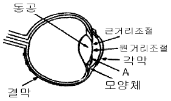
- 홍채 : 조리개
- 중심와 : 렌즈
- 망막 : 필름
- 눈꺼풀 : 셔터
(정답률: 알수없음)
34. 다음 중 눈에 관한 설명으로 잘못된 것은?
- 어두운 곳에서 동공을 활짝 여는 것은 들어오는 광선의 양을 늘리는 조절작용이다.
- 크게 열린 수정체를 통하여 맺어지는 상의 선명도는 높으며 초점거리는 멀어진다.
- 눈의 잔상은 약 1/16초간 지속하므로 화면이 1초간 16칸 이상 투영될 때 연속적으로 보인다.
- 전광판의 전등이 일정시간차로 깜빡임에 따라 불빛이 움직이는 것으로 착각되는 것은 필름의 수동시 화면내에서의 움직임을 느낄수 있는 것과 같은 운동지각때문이다.
(정답률: 알수없음)
35. 양호한 영사스크린의 조건 설명으로 틀린 것은?
- 연색성이 좋을 것
- 반사율이 좋을 것
- 높은 광도를 바랄 수 있을 것
- 지향성이 없을 것
(정답률: 알수없음)
36. 영사기의 스프라케트 로울러와 스프라케트 사이의 틈새에 대한 내용으로 알맞는 것은?
- 사이가 없이 붙어 있어야 필름이 이탈되지 않는다.
- 필름의 두께와 같아야 한다.
- 필름두께의 2배 정도이다.
- 필름두께의 1/4배 정도이다.
(정답률: 알수없음)
37. 70mm(스탠다드) 필름의 간헐식 인터미턴트 스프로케트의 톱니 수는 몇 개인가?
- 16
- 20
- 24
- 32
(정답률: 알수없음)
38. 영사기 영사용 셔터는 주엽과 부엽이 있는데 주엽(主葉)을 무엇이라 하는가?
- 스프라켓트
- 플리커 브레이드
- 마르테즈 크로스
- 메인 브레이드
(정답률: 알수없음)
39. 영사용 영사기의 안전장치는 어떤 일을 하는가?
- 빛을 고르게 분산시키는 역할을 한다.
- 상영 중 사고 발생시 필름을 보호해 준다.
- 전원을 안정적으로 공급시켜 준다.
- 영사기의 음질과 음량을 조절해 준다.
(정답률: 알수없음)
40. 크세논 램프(Xenon Lamp)에 공급전압 극성이 바뀌어 점화되었을 때의 설명으로 바르게 된 것은?
- 애노드 전극이 먼저 순간 소모된다.
- 캐소드 전극이 먼저 순간 소모된다.
- 애노드 및 캐소드 전극이 동시 소모된다.
- 애노드와 캐소드의 극성에 관계없이 계속 점화 유지된다.
(정답률: 알수없음)
41. 영사기에서 크세논(Xenon)아크의 안정을 유지하도록 하기 위한 장치는?
- 크세논 램프의 냉각장치
- 스탠바이(stand-by)장치
- 동축코일을 이용한 전자석 장치
- 전력회로가 자동 차단되도록 하는 스위치 안정장치
(정답률: 알수없음)
42. 2kW, 80A인 크세논 램프를 점화하기전 무부하시의 공급전압의 범위는 얼마인가?
- DC 20V - 26V
- DC 70 - 75V
- DC 3000V - 4200V
- DC 20000V - 32000V
(정답률: 알수없음)
43. 사운드헤드(soundhead)부의 설명으로 잘못된 것은?
- 영사 중 엑사이더램프와 쏠라셀 사이에서 불빛을 불규칙하게 증폭기에 비추는 부분이다.
- 엑사이더램프로부터 음대에 초점을 맞추어 주는 광학장치 기구이다.
- 쏠라셀에 빛을 비추면 증폭할 수 있는 전압이 발생하게 되는 부분이다.
- 필름이 정속스프라케트를 지나 권취스프라케트와 매거진 로라를 통하여 하부 매거진으로 진입하기 전의 부분이다.
(정답률: 알수없음)
44. 35mm 영사기와 관련된 설명 중 틀린 것은?
- 필름의 화면 폭은 약 22×16mm 이다.
- 사운드 트랙의 폭(음대)은 약 2.5mm이다.
- 필름 1프레임은 16mm이다.
- 1프레임의 퍼포레이션홀은 4개이다.
(정답률: 알수없음)
45. 다음 중 상영된 필름을 권취기에서 되감을 때 영사속도보다 몇 배정도 빠르게 감는 것이 좋은가?
- 8~9배
- 6~7배
- 2~3배
- 0.5~1배
(정답률: 알수없음)
4과목: 영사기와 필름의 구조원리
46. 필름 보관에 관한 내용 중 적합하지 않은 것은?
- 통풍이 잘되는 곳에 보관한다.
- 적정 온도에서 보관한다.
- 습기가 많지 않은 곳에 보관한다.
- 방청유를 필름표면에 칠해서 보관한다.
(정답률: 알수없음)
47. 영사용 필름 양쪽에 구멍(퍼포레이숀)이 나있는 이유로서 타당한 것은?
- 열이 나는 것을 방지하는 통풍을 위해서
- 화면의 상을 선명하게 하기 위해서
- 필름 이동 수송을 원활히 하기 위해서
- 영사기의 과열로 인한 방화를 방지하기 위해서
(정답률: 알수없음)
48. 70mm 스탠다드의 필름 1프레임당 퍼포레이션·홀 수는 몇개인가?
- 4개
- 5개
- 12개
- 15개
(정답률: 알수없음)
49. A관객이 영화사운드(음향)에 이상을 느낄 수 있는 것은 몇 프레임 정도의 필름이 잘렸을 때부터 인가? (단, 35mm용 영사거리일 때)
- 1 프레임
- 2 프레임
- 3 프레임
- 1 프레임의 반 정도
(정답률: 알수없음)
50. 영사에 있어서 마지막 점표식은 영사기의 전환신호이다. 설명이 바르게 된 것은?
- 1초 전 4 프레임안에 나타난다.
- 10초 전 4 프레임안에 나타난다.
- 5초 전 1 프레임안에 나타난다.
- 10초 전 1 프레임안에 나타난다.
(정답률: 알수없음)
51. 영사기의 자동방화셔터의 역할에 대하여 맞는 설명은?
- 전원이 꺼졌을 때 동작한다.
- 모터가 섰을 때 동작한다.
- 필름이 끊어졌을 때 동작한다.
- 화면이 이중을 이루었을 때 동작한다.
(정답률: 알수없음)
52. 영사실에 크세논 정류기를 설치하려고 한다. A정류기와 B정류기 2대를 설치할 때 적당한 방법은?
- 벽으로 부터 바짝 붙여 놓고 정류기 사이를 10cm이상 떼어 놓는다.
- 벽으로 부터 10cm이상 떼어 놓고 정류기 사이를 바짝 붙여 놓는다.
- 벽으로 부터 20cm이상 떼어 놓고 정류기 사이를 10cm 떼어 놓는다.
- 벽으로 부터 바짝 붙여 놓고 또한 정류기 사이도 바짝 붙여 놓는다.
(정답률: 알수없음)
53. 6.20mm와 2.13mm로 된 옵티칼트랙 치수(Optical track Dimension)의 필름 규격은?
- 16mm용
- 35mm용
- 65mm용
- 70mm용
(정답률: 알수없음)
54. 35mm 영사 필름이 1초간 영사되는 길이는 몇 mm인가?
- 408mm
- 432mm
- 456mm
- 480mm
(정답률: 알수없음)
55. 35mm 영사 필름에서 화면(그림)과 소리(광학 사운드트랙)의 위치관계가 올바른 것은?
- 그림과 소리는 언제나 같은 위치에 있다.
- 그림은 소리보다 앞서 있다.
- 소리는 그림보다 앞서 있다.
- 그림과 소리가 적당히 있는 것을 영사기로 조절한다.
(정답률: 알수없음)
56. 영사필름의 아날로그 음대형식으로 현재 많이 쓰이는 것은?
- 면적형에 쌍줄식
- 농도형에 외줄식
- 농도형에 쌍줄식
- 면적형에 엇서기형
(정답률: 알수없음)
57. 인간의 눈 망막의 주변부에 집중해서 분포되어 명암을 감지하는 곳을 무엇이라 하는가?
- 간상체
- 추상체
- 수정체
- 시신경
(정답률: 알수없음)
58. 사운드 헤드의 슬리트 렌즈(Slit Lens) 초점이 부정확할 때의 설명으로 올바른 설명은?
- 고음이 나빠진다.
- 고음이 선명하고 좋아진다.
- 저음이 풍부하게 재생된다.
- 서라운드의 음으로 변형된다.
(정답률: 알수없음)
59. 35mm 영사기의 표준(Standard) 아파츄어 JIS 규격은?
- 35mm x 19mm
- 25.96mm x 19.24mm
- 21.00mm x 15.30mm
- 19.24mm x 13.24mm
(정답률: 알수없음)
60. 크세논 램프의 점화 방식으로 맞는 것은?
- 전극간 접촉을 통한 점화 방식
- 고압 펄스를 이용한 점화 방식
- 전압 강하에 의한 점화 방식
- 가열에 의한 점화 방식
(정답률: 알수없음)